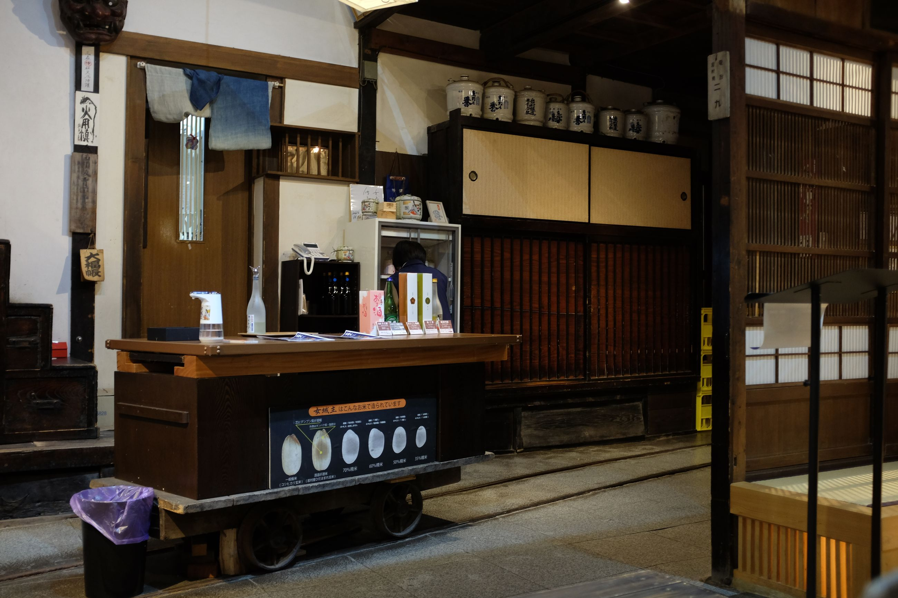
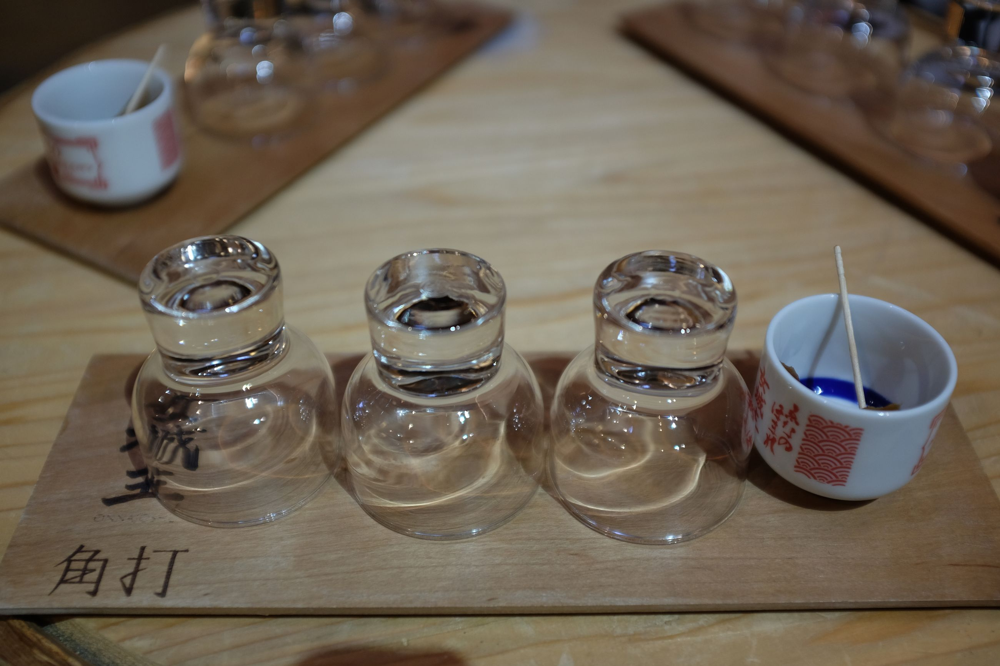
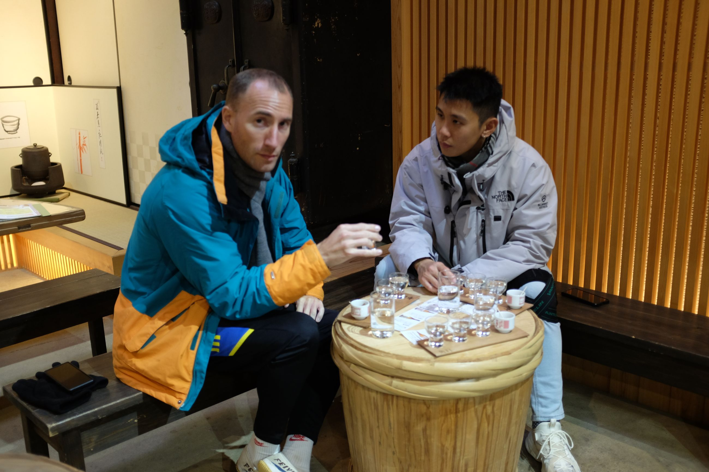
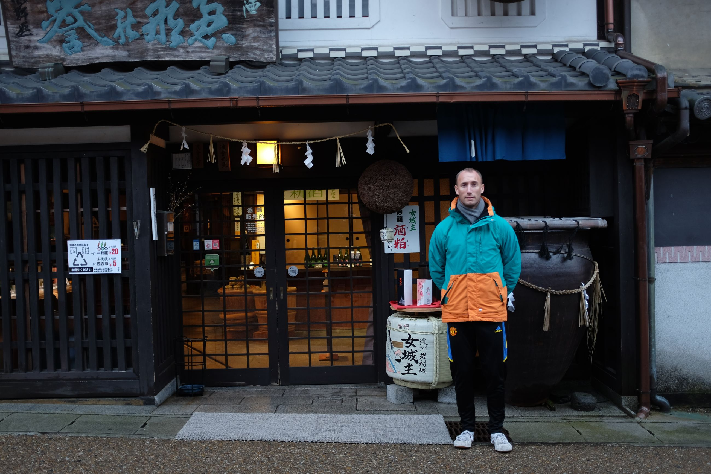
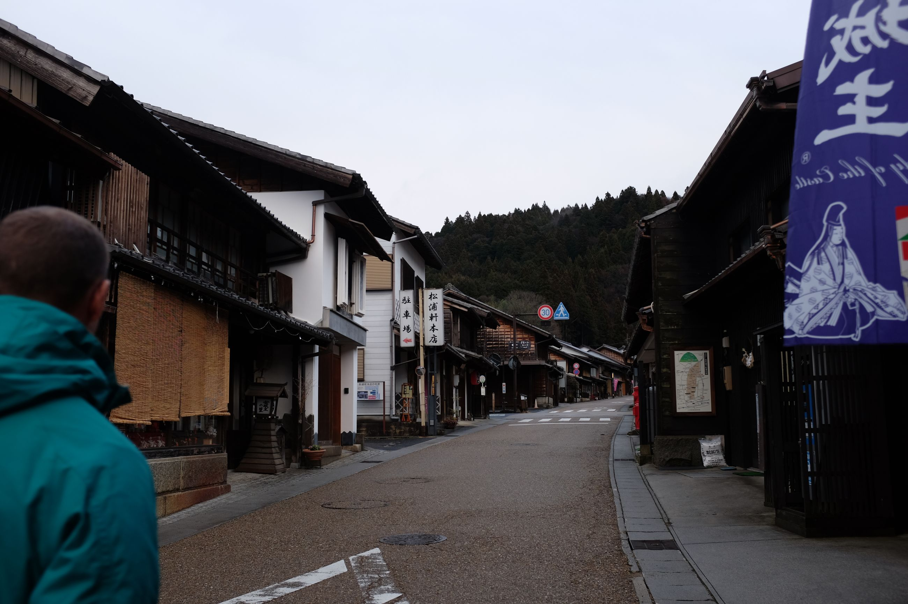
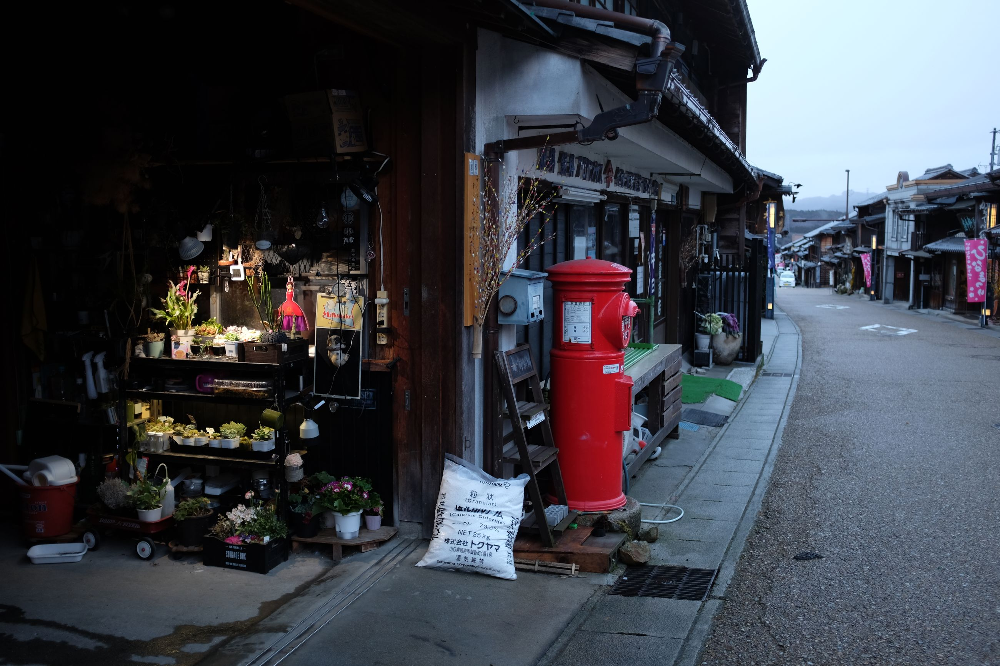
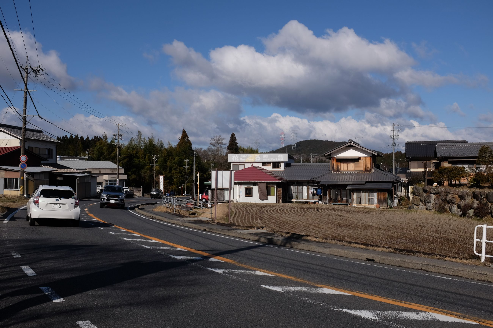
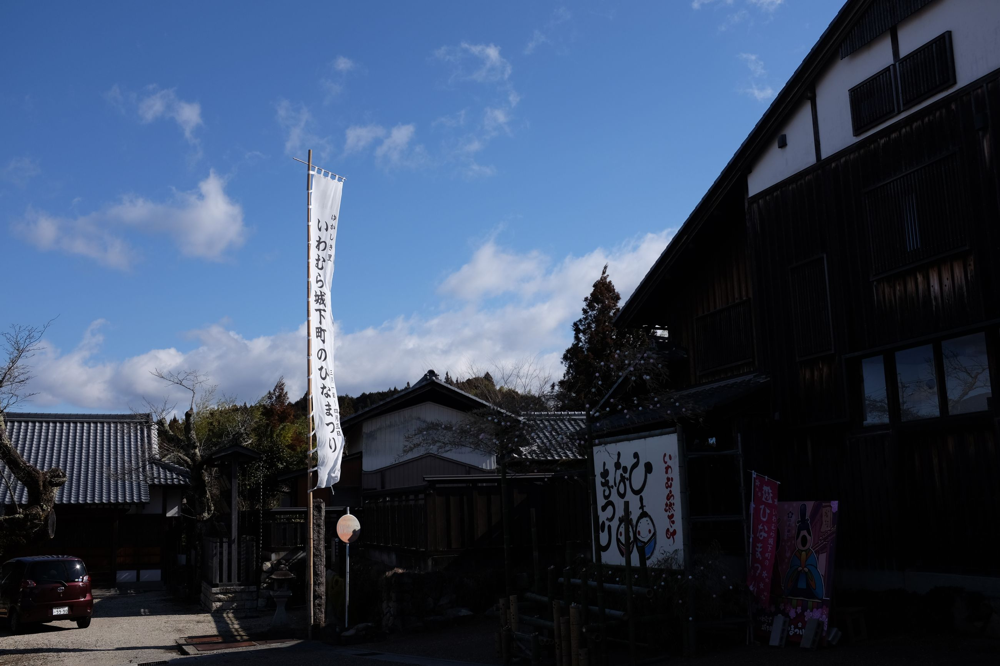
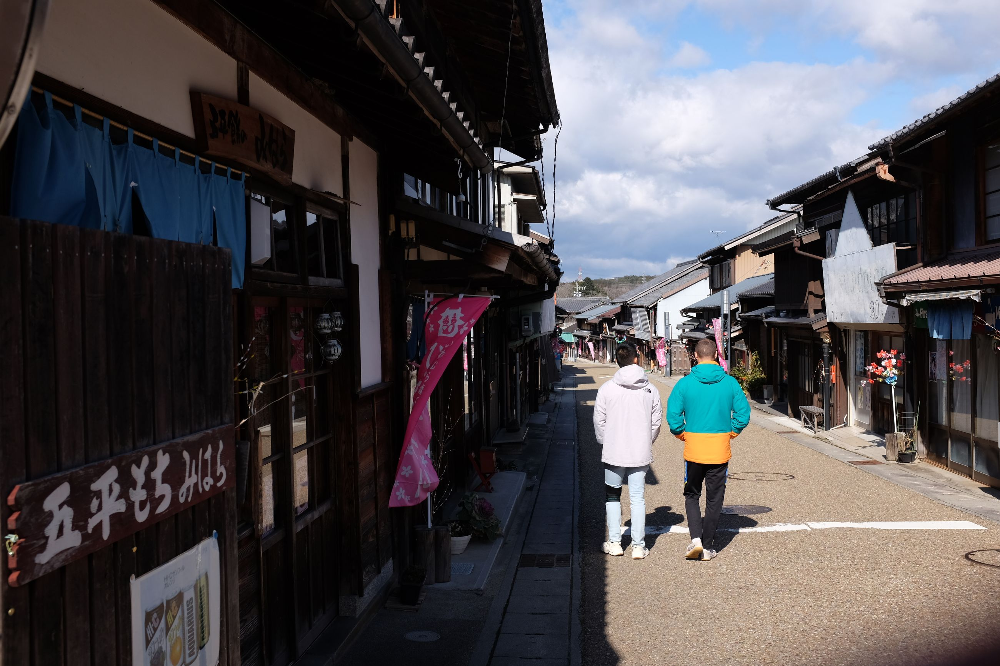

Iwamura is the smallest town we visit: population 5,000.
This one really feels like a ghost town. Although the town is nicely maintained, as has every town been, it is actually eerily quiet. We arrive in the late afternoon, around 16:00. Most shop fronts that look like they operate some restaurant or cafe are closed. The coldness of the day sets in from the rain.
When we arrive to our accommodation, no one is home. We have to wait around for 30 minutes, when Toki, the ryokan's guest host, shows up and welcomes us in. Like Magome, the town seems to mostly revolve around one road. This town only has one traffic light in it. But, like in other small towns, it doesn't seem to be lacking in either having a post office or a sake distillery. So, we go sake tasting.
   
As the sun sets, the town gets even more quiet. It lulls into the darkness.
 
At night, Toki, the ryokan owner, recommends that we go to Tono Restaurant. We get the feeling that she runs a tourism ring with her friends, with the restaurant recommending guests to the ryokan, and vice versa. Some Google reviews have spoken on this, saying that the ryokan we stayed at actually ask people to "help out" in the hostel without paying them -- something about using government tax money to do so. Not sure. But, we run with this conspiracy and are convinced that those at the hostel have a monopoly on accommodation and are running others out of business in the area. The recommendation to the restaurant felt in line with this sort of explanation, but we still went anyway. The interior was interesting -- a random assortment of toy action figures and dolls. The stuff of childhood boys and girls' nightmares, I imagine. But, like with the other restaurants, the husband and wife make a good team and some delicious food.
The next morning, the rain had passed, and we took a stroll around town, going for breakfast and retracing our steps from yesterday. The town is incredibly picturesque, despite still being closed. We leave as quickly as we come in, barely making a dent in the silence.
  
The Japanese countryside really is something else. It makes Tokyo sound exhausting and look uninteresting. There are many fun characters -- particulary in the restaurants -- and a certain cosiness to it. Onsen ski trip 2024 -- success.